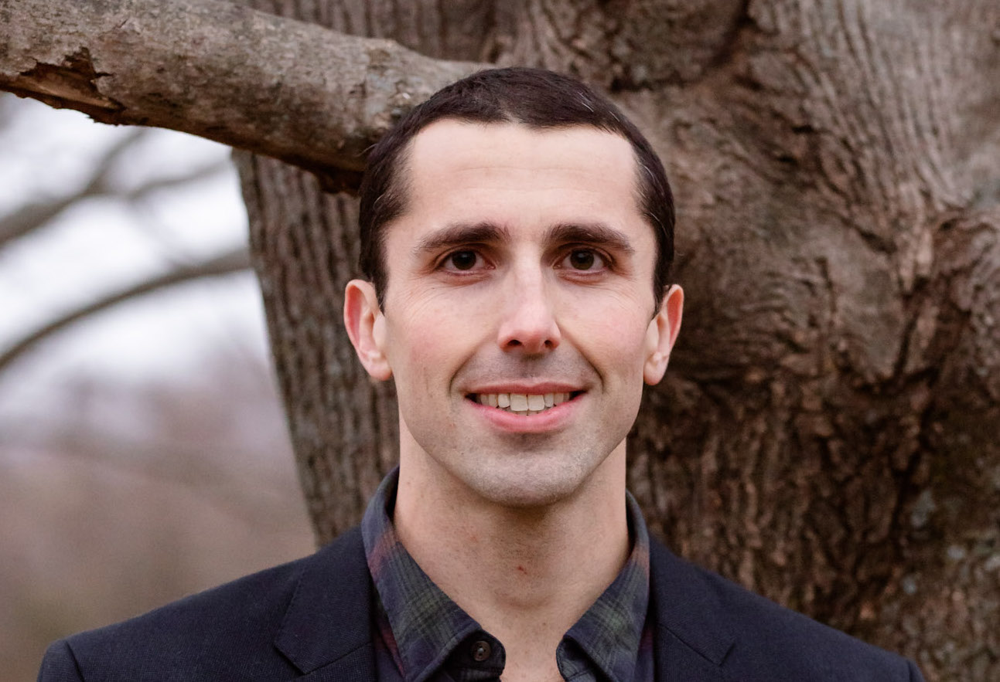

Talk Title: 2025: the Digital Pathology Odyssey Continues
Start Time: 8:40 AM CDT
Speaker:
Inti Zlobec, Professor, University of Bern.
 Abstract:
Abstract: Pathology is going digital! On the one hand, digitization of glass slides and automated lab workflows are meant to improve efficiency and open the gateway to AI applications. On the other, pathologists are faced with interpreting images for diagnosis in a completely different way (on a monitor rather than microscope) yet still assuring the quality of their diagnoses with no change in turn-around-times. Is AI meant to help here? Generative AI and large language models (LLMs) have shown promising capabilities in delivering precise pathology diagnoses and suggesting effective treatment plans when paired with histological images. Foundational models have attracted attention for their ability to recognize complex tissue patterns and to be fine-tuned for enhanced accuracy in specific applications. With AI making headlines across the field, we would imagine that AI in pathology is ready for prime time. Is it? In today’s talk, we explore the answer to this question, taking a bird’s eye-view on where the community stands with the transition to digital pathology. We will then take a critical approach to the current market for AI applications and associated challenges. We will ask ourselves, which medical professionals do tissue-based AI algorithms benefit (pathologists or oncologists?), and how will pathologists and oncologists deal with the rise in increasingly complex biomarker algorithms? Indeed, pathologists seem ready to use AI tools based on hand-crafted features, leading to verifiable AI outputs, but what about those tools using end-to-end deep learning for predicting molecular aberrations, therapy response or prognosis? The computational companion diagnostic tests are starting to gain momentum, but how will pathologists trust tests whose results they cannot verify- should they? Finally, we will look at where we go from here. The technologies are at our fingertips, including spatial transcriptomics and multiplex immunofluorescence, as well as vision-language models to name a few. To wrap up, we look at where the field is going and what we can expect in the near to mid- to long-term future.
Speaker Bio:
Inti Zlobec holds the position of Professor (Extraordinarius) of Digital Pathology at the Institute of Pathology, University of Bern, Switzerland. She graduated with a PhD degree in Experimental Pathology, from McGill University, Montreal, Canada in 2007 before completing a post-doctoral fellowship at the Institute of Pathology, University Hospital Basel, where she conducted tissue-based research in the field of colorectal cancer using biostatistical models. After habilitating in 2010, she received a position at the Institute of Pathology, University of Bern, where she established and led the Translational Research Unit (TRU) and later the Tissue Bank Bern (TBB). Inti became Associate Professor in 2014. Now, she leads an inter-disciplinary research group of students and researchers using artificial intelligence and machine learning as tools to study pathology images along with other data types to discover and validate novel prognostic and predictive biomarkers for colorectal cancer patients. Inti is a member of the Executive Team of the Center for Artificial Intelligence in Medicine (CAIM) of the University of Bern, Co-Founder and President of the Swiss Consortium for Digital Pathology (SDiPath), Chair of the European Society of Pathology (ESP) Working Group Digital and Computational Pathology and Board Member of the European Society of Digital and Integrative Pathology (ESDIP).
Talk Title: The AI Revolution in Multimodal Radiology Informatics
Start Time: 9:20 AM CDT
Speaker:
Ron Summers, Senior Investigator, National Institute of Health
Abstract: Deep learning has enabled sophisticated AI analysis of radiology images, including CT, MRI, ultrasound, and radiography. Multimodal AI takes this sophistication to a new level. The incorporation of both clinical text and radiology images into multimodal models enables even more accurate predictions and expands the number of clinical use cases. Incorporation of multimodal imaging data sets is the next logical step. In this presentation, I will explore some of the latest developments in multimodal radiology AI with the goal to improve patient health.
Speaker Bio:
Dr. Summers received the BA degree in physics and the MD and PhD degrees in Medicine/Anatomy and Cell Biology from the University of Pennsylvania. He completed a medical internship at the Presbyterian-University of Pennsylvania Hospital, Philadelphia, PA, a radiology residency at the University of Michigan, Ann Arbor, MI, and an MRI fellowship at Duke University, Durham, NC. In 1994, he joined the Radiology and Imaging Sciences Department at the NIH Clinical Center in Bethesda, MD. where he is now a tenured Senior Investigator and Staff Radiologist. He is a Fellow of the Society of Abdominal Radiologists and of the American Institute for Medical and Biological Engineering (AIMBE). He directs the Imaging Biomarkers and Computer-Aided Diagnosis (CAD) Laboratory and is former and founding Chief of the NIH Clinical Image Processing Service. In 2000, he received the Presidential Early Career Award for Scientists and Engineers, presented by Dr. Neal Lane, President Clinton's science advisor. In 2012, he received the NIH Director's Award, presented by NIH Director Dr. Francis Collins. In 2017, he received the NIH Clinical Center Director's Award.
He has co-authored over 500 journal, review and conference proceedings articles and is a co-inventor on 14 patents. He is a member of the editorial boards of the Journal of Medical Imaging, Radiology: Artificial Intelligence and Academic Radiology and a past member of the editorial board of Radiology. He is a program committee member of the Computer-aided Diagnosis section of the annual SPIE Medical Imaging conference and was co-chair of the entire conference in 2018 and 2019. He was Program Co-Chair of the 2018 IEEE ISBI symposium.
Speaker:
Badri Roysam, Professor, University of Houston
Speaker Bio:
Badri Roysam (Fellow IEEE, AIMBE) is the Hugh Roy and Lillie Cranz Cullen University Professor, and Chairman of the Electrical and Computer Engineering Department at the University of Houston (2010 – present). From 1989 to 2010, he was a Professor at Rensselaer Polytechnic Institute in Troy, New York, USA, where he directed the Rensselaer unit of the NSF Engineering Research (ERC) Center for Subsurface Sensing and Imaging Systems (CenSSIS ERC), and co-directed the Rensselaer Center for Open Source Software (RCOS) that was funded by a major alumnus gift. He received the Doctor of Science degree from Washington University, St. Louis, USA, in 1989. Earlier, he received his Bachelor’s degree in Electronics from the Indian Institute of Technology, Madras, India in 1984. Badri’s research is on the applications of multi-dimensional signal processing, machine learning, big-data bioinformatics, high-performance computing to problems in fundamental and clinical biomedicine. He collaborates with a diverse group of biologists, physicians, and imaging researchers. His work focuses on automated analysis of 2D/3D/4D/5D microscopy images from diverse applications including cancer immunotherapy, traumatic brain injury, retinal diseases, neural implants, learning and memory impairments, binge alcohol, tumor mapping, stem-cell biology, stroke research, and neurodegenerative diseases.
Talk Title: Multimodal Generative AI for Precision Health
Start Time: 13:10 PM CDT
Speaker:
Hoifung Poon, Ph.D., General Manager, Microsoft.
 Abstract:
Abstract: The dream of precision health is to develop a data-driven, continuous learning system where new health information is instantly incorporated to optimize care delivery and accelerate biomedical discovery. The confluence of technological advances and social policies has led to rapid digitization of multimodal, longitudinal patient journeys, such as electronic medical records (EMRs), imaging, and multiomics. Our overarching research agenda lies in advancing multimodal generative AI for precision health, where we harness real-world data to pretrain powerful multimodal patient embedding, which can serve as digital twins for patients. This enables us to synthesize multimodal, longitudinal information for millions of cancer patients, and apply the population-scale real-world evidence to advancing precision oncology in deep partnerships with real-world stakeholders such as large health systems and life sciences companies.
Speaker Bio:
Hoifung Poon is General Manager at Health Futures in Microsoft Research and an affiliated faculty at the University of Washington Medical School. He leads biomedical AI research and incubation, with the overarching goal of structuring medical data to optimize delivery and accelerate discovery for precision health. His team and collaborators are among the first to explore large language models (LLMs) and multimodal generative AI in health applications, producing popular open-source foundation models such as PubMedBERT, BioGPT, BiomedCLIP, LLaVA-Med, BiomedParse, with tens of millions of downloads. His latest publication in Nature features GigaPath, the first whole-slide digital pathology foundation model pretrained on over one billion pathology image tiles. He has led successful research partnerships with large health providers and life science companies, creating AI systems in daily use for applications such as molecular tumor board and clinical trial matching. His prior work has been recognized with Best Paper Awards from premier AI venues such as NAACL, EMNLP, and UAI, and he was named the "Technology Champion" by the Puget Sound Business Journal in the 2024 Health Care Leadership Awards. He received his PhD in Computer Science and Engineering from the University of Washington, specializing in machine learning and NLP.
Talk Title: Generative Models of Cellular Organization
Start Time: 15:20 CDT
Speaker:
Greg Johnson, Ph.D, Research scientist, EvolutionaryScale.
Abstract: Understanding cells as integrated systems is a central challenge in modern biology. While fluorescence microscopy provides high-resolution views of specific subcellular structures, imaging many structures simultaneously or across time remains limited by phototoxicity, spectral overlap, and acquisition cost.
We address these limitations by learning joint representations across imaging modalities and subcellular structures. Our approach enables the generation of highly multiplexed, structure-specific visualizations from label-free inputs, bypassing the constraints of fluorescence labeling. We extend this framework to jointly model cell and nuclear morphology alongside subcellular localization, enabling conditional generation of realistic 3D images and the discovery of spatial associations between organelles.
By capturing these relationships, our method quantifies structural variability across cells and perturbation conditions. Finally, we outline extensions to incorporate additional data modalities—including perturbation metadata, single-cell transcriptomics, and genetic variation—to enable integrative modeling of cellular state and structure at scale.
Speaker Bio:
Dr. Gregory R. Johnson is a research scientist at EvolutionaryScale, developing technology to model biological systems across diverse data types and scales. Previously, he co-founded NewLimit to pursue therapies targeting age-related diseases and built predictive models of cellular organization. His work spans machine learning applications in natural sciences and technology development across academia and industry. He earned his Ph.D. from Carnegie Mellon University, specializing in generative models to understand how cells are organized and respond to perturbations.
Talk Title: Cellular resilience: A new frontier for artificial intelligence-driven drug discovery
Start Time: 16:20 CDT
Speaker:
Drew Linsley, Assistant Professor, Brown University.

Abstract: Neurodegenerative diseases often manifest without warning, yet their progression may be rooted in a fundamental cellular property: the gradual loss of resilience to everyday stressors that allows genetic predispositions to trigger disease onset and progression. On a molecular level, cellular resilience factors typically include proteostatic, metabolic, antioxidant and DNA repair pathways that capably compensate for pathological genetic mutations but that tend to degrade with aging. Despite growing recognition of cellular resilience as a promising therapeutic target, the field lacks systematic approaches to identify and validate interventions.
At Operant BioPharma, we have developed a novel robotic microscopy platform that can watch and control the biology of individual live cells at scale. In this talk, I will describe how we have used this platform to generate candidate therapeutic programs which reinforce cellular resilience in human Parkinson's disease models. Our approach represents a new paradigm for applying AI to complex progressive diseases by giving intelligent systems direct access to live cellular biology—enabling our systems to control, observe, and learn from how cells respond to perturbations in real-time at molecular, cellular, and network levels. This creates a fast and powerful feedback loop between AI-driven experimentation and biological discovery that can accelerate therapeutic development by discovering new programs that would be challenging to identify through other means.
Speaker Bio:
Dr. Linsley is an Assistant Professor (Research) in Computational Neuroscience and AI at Brown University. He previously did a postdoc with Thomas Serre, also at Brown. Before that, he received his PhD at Boston College with Sean MacEvoy, and BA at Hamilton College working with Jonathan Vaughan. He studies biological and artificial vision. He is Co-Founder and CEO at Operant Biopharma whose robotic microscope, powered by artificial intelligence, designs drugs by watching and controlling diseases over time.